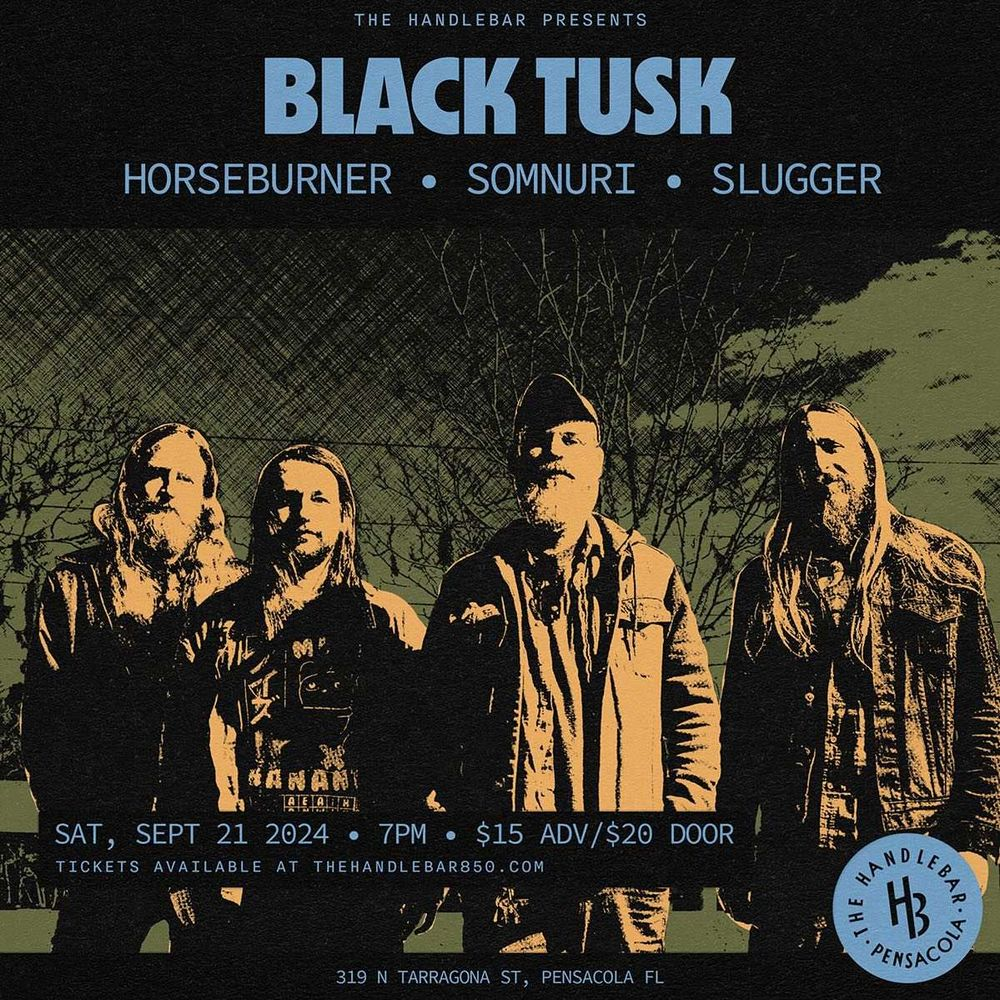

SAT SEP 21from the archive
Black Tusk, Horseburner, Somnuri, Slugger
7pm
$15 ADV / $20 DOOR
Just announced for September - Excited to bring in Savannah, GA’s sludge legends BLACK TUSK! Tickets on sale this Friday!
also that nightcavae mundi, migraine, john hart, no complications, feed lemon, about to sweat, honey daze, rufus mcblack, aumua, tori lucia @ museum plaza, 120 church st, pensacola flmeadows, i am terrified, scream out loud, accursed creator @ subculture
← back to the punksacola archive · all of 2024